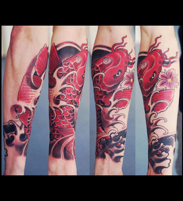
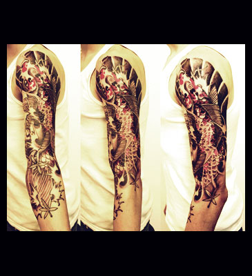
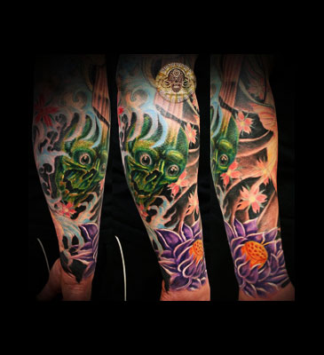
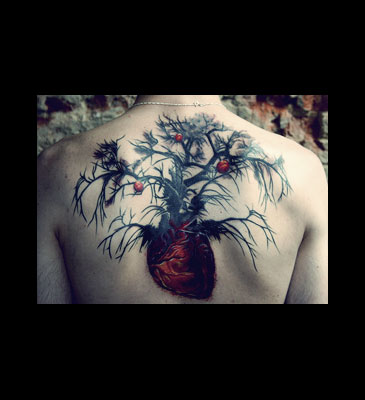
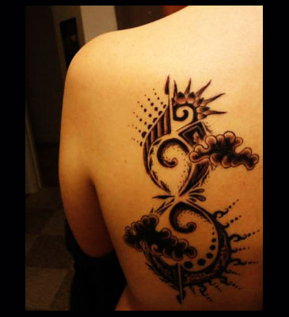
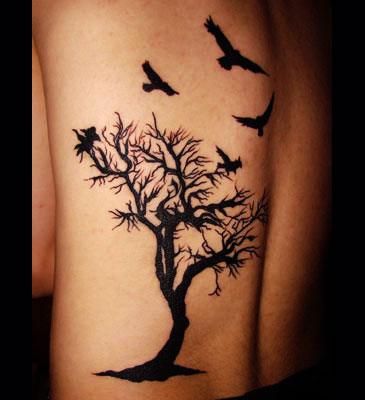
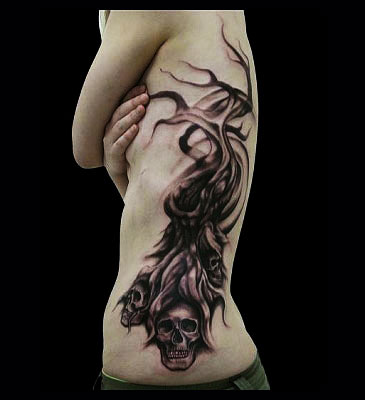
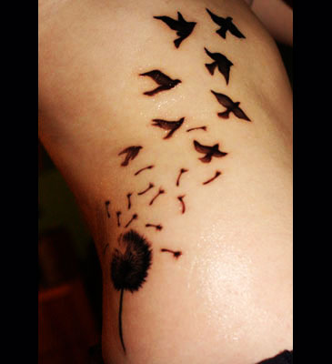

Giới Thiệu :
● Xăm là một hình thức ghi dấu vĩnh viễn bằng mực làm thay đổi sắc tố da để làm đẹp, tạo ấn tượng hoặc những nguyên nhân khác. Xăm ở người là một loại hình nghệ thuật cơ thể trong khi xăm ở động vật thường để nhận biết và đánh dấu là vật sở hữu.
● Nghệ thuật xăm xuất hiện rộng rãi trên toàn thế giới: người Ainu ở Nhật Bản, người Berber ở Bắc Phi, người Maori ở New Zealand, những bộ lạc ở vùng đào Thái Bình Dương, Châu Mỹ, Châu Âu, Philippin, Campuchia,... Bất chấp những điều cấm kỵ xung quanh việc xăm mình, nghệ thuật này vẫn trở thành một phần phổ biến trên thế giới.
● Mục đích xăm thường mang ý nghĩa về Tôn Giáo, Thẩm Mỹ, hay ý nghĩa nhân văn cá nhân hoặc đơn giản chỉ là sở thích!
Dịch Vụ :
● Xăm mới các loại hình lớn nhỏ theo yêu cầu, bạn có thể lựa trọn hình có sẵn của chúng tôi hoặc nêu ý tưởng để thiết kế hình riêng. Xăm truyền thống đen trắng hoặc xăm màu tùy ý.
● Tư vấn xăm, chỉnh sửa hình cũ theo mong muốn. Lưu ý: Xăm đè hoặc xăm thêm theo hình cũ đều cho ra kết quả đẹp như hình mới nhưng cần thời gian lâu hơn để xây dựng ý tưởng và phác thảo hình.
Liên Hệ :
● Mọi thắc mắc xin liên hệ ngay với chúng tôi qua số điện thoại 0938 318 558 gặp Mr Trung để được tư vấn và giải đáp!
● Hạ Long Tattoo Studio - Số 172 Giếng đáy, Bãi Cháy, Hạ Long, Quảng Ninh.







